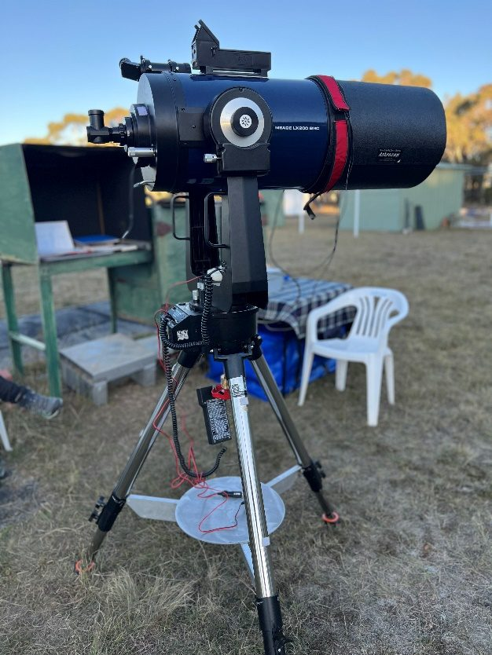

Deep Sky Notes — April 2025
Wiruna Wanderings
I was particularly looking forward to the April weekend away to Wiruna. This weekend would mark the first time I would have my 10-inch Meade LX200 (affectionately known by some as “The Coffee Grinder”) up and running in many years. Living in Europe for the last 9 years, meant the LX200 remained in Australia in storage, patiently waiting for my return. Upon returning to Australia in late 2024, I set myself the project of rejoining the society and getting the LX200 electronics and optics up and running again.
As owners of classic Meade telescopes know, the older telescopes can be plagued by a few electronic issues. In particular, five insufficiently rated capacitors that have a tendency to blow at any time and take whole circuit boards with them. So with the help of YouTube and friends, I managed to swap out four of the five offending capacitors for a higher rated capacitor. This weekend would be the first in-field test of the telescope to see if my mediocre soldering skills had done a sufficient job.
My wife and I arrived at Wiruna on Thursday afternoon at 1.30pm to a blue sky dotted with clouds. We proceeded to setup the campsite and we set up the LX200 near the Club’s 17-inch Dob. A pair of Black Cockatoos stood watch over the main observing field as I set up the telescope. Several members were on-site already. As sunset approached, the sky completely cleared for one of those beautiful Wiruna sunsets.

The Coffee Grinder
I was eager to test out The Coffee Grinder, so by 6pm I had the scope’s 2-star alignment complete, and slewed to the first object to test the alignment. I was relieved to hear the drone of the RA and DEC drives as the telescope slewed. The “magic smoke” that powers the electronics appeared to stay in the telescope for now. Omega Centauri was the first test object I choose; it was a little off centre but happily in the field of view. With the scope behaving itself it was time to get stuck into some visual observing. Normally I would have some sort of list of observing targets prepared, but a hectic week meant I had nothing prepared. So with my copy of Wil Tirion’s in hand, I proceeded to hop across the sky on a unplanned tour of some old favourites and some new discoveries.
The constellations of Centaurus, Crux and Carina placed perfectly to the south, so this was where I began. I started with another globular in Centaurus, NGC 5286. At 7.6 magnitude and 9’ across, this globular is no comparison to its more illustrious neighbour, but I could begin to resolve some of the brighter stars in the core. A bright yellow-orange star dominated the field of view beneath the cluster. What makes NGC 5286 particularly intriguing is it is among one of the oldest globular clusters in our galaxy. Astronomers speculate that NGC 5286 is remanent of a dwarf galaxy that collided with our own galaxy millions of years ago
From there I hoped over to NGC 4945, an edge on barred spiral galaxy with a supermassive black hole in its centre. Through the 10inch it appears as a diagonal, cigar-shaped luminous haze, lying at a 45-degree angle. It appears to have an even brightness, although images reveal dust clouds mottled along the spiral arms. I was quite surprised by the size of the galaxy, 20’ x 4’ taking up half the field of view in the 26mm eyepiece.
Next came NGC 5138, a 7.6 magnitude open cluster in Centaurus. This cluster presented as a large, sparsely populated cluster of ~40 stars, with no structured core. It would probably have benefited from a larger field of view, but the 26mm eyepiece was the widest I had on me. This was closely followed by a nearby 9th magnitude open cluster, NGC 4852. Again, this cluster would probably have benefited from a wider field of view. However, it appeared to have more structure than NGC 5138, with chains of stars creating a pleasant field of view.
Next, I moved into Crux, where most attention is given to NGC 4755 aka “The Jewel Box”, so I decided to try my luck on something new, NGC 4337. At 9th magnitude this open cluster was significantly fainter and smaller than my earlier targets. Although I could easily resolve the brighter stars in the core, averted visions reveals more stars around the core. The field of view is framed by a side-on parabola of stars, and NGC 4337 sits at the top of this parabola. A unique fact about NGC 4337 is its age, with it being one of a handful of older open clusters in the high-density regions of the inner galactic disk.
From Crux, I wandered into Carina and the open cluster NGC 3590. This open cluster sits at 8.2 magnitude but appear very disperse with several smaller pockets of stars. This led me to NGC 2808 a 6.3 magnitude globular cluster in Carina. NGC 2808 is one of the Milky Way's most massive clusters, containing more than a million stars. Although relatively bright, the cluster’s dense core resisted resolution, even at higher magnifications.
I then hoped over to the constellation of Musca. A constellation I have often overlooked but sits at the foot of Crux and is easily identified by its distinctive shape with the naked eye. I centred on NGC 4833 a 7.3 magnitude globular cluster. Even without a Go-To telescope, this one is easy to find as it is close to Delta Muscae. With Delta Muscae in the viewfinder, I can just make a faint fudge in the 9x50 viewfinder. NGC 4833 appeared as a relatively bright cluster, with chains of brighter stars resolved. Also in Musca is another larger, but fainter globular cluster NGC 4372. NGC 4372 can be found by pointing the telescope at Gamma Muscae, and the viewfinder should pick it up.
Throughout the night I could feel a significant layer of dew starting to coat everything. My dew shield (with no dew heater) was starting to struggle. While spending so much time focusing on getting the electronics working, I had neglected to get a working dew heater. Sensing the end was near, I swung the telescope low in the eastern horizon into Scorpio, to try keep the corrector plate dry as long as possible. From here I hoped around a few globular clusters dotted around the galactic centre.
Despite best efforts, the dew had built up significantly, and I could no longer ignore the large halos around the brighter stars. I decided to call the night around 11pm. So even though it was a shortened night, I was glad to have the telescope up and running again under the dark skies of Wiruna.
I woke up the next day to clear skies and a beautiful sunrise. Although the Wiruna working bee was scheduled for Saturday several jobs in the kitchen were started and occupied us until the afternoon. The day brought some threatening grey clouds in the distance, but as the afternoon wore on these seemed to melt away. Throughout Friday afternoon more scopes arrived in anticipation of a clear night. With no threat of rain, I though it safe to pull out The Coffee Grinder from the car and set it up again. Although the forecast was for a slightly warmer night, I was still at risk of my mirror dewing up. However, Greg Priestley came to my rescue and lent me his dew heater and controller.
I wandered onto the field at about 6.15pm and aligned the scope. A small group of members began congregating around The Coffee Grinder, no doubt drawn in by its siren call of slewing. We proceeded to hop around a few targets suggested by the assembled crowd.
Trevor Oates suggested M99, a face on spiral galaxy in Coma Berenices, as he was currently imaging it. So, I wandered over to compare the view in my eyepiece to that through his camera. Alas, my eyes were no comparison to the camera’s 5-minute exposures. Where the camera clearly revealed three bright spiral arms, the 10-inch could only uncover a bright uniform core with a surrounding halo roughly 5.4’ x 4.8’, but with no further details apart from a slight elongated shape. We then hoped over to M104 in Virgo, the Sombrero Galaxy. This bright galaxy with its characteristic bulbous core was clearly visible. A dark band of dust clearly visible through the length of the galaxy. Continuing the galaxy theme, I centred on NGC 5128 in Centaurus, otherwise known as the ‘Hamburger Galaxy’. This galaxy displays a bright 6.8 magnitude core, with its characteristic thick dusty spiral arm cutting across it’s galactic core clearly visible.
With an enthusiastic audience gathered around, I swung to the south to catch the last views of the Small Magellanic Cloud before it was lost to the tree line. The perennial crowd pleaser, 47 Tuc at 4.0 magnitude and 30’ in size, is always a treat no matter how many times you have seen it. From there up to Large Magellanic Cloud and NGC 2070, the Tarantula Nebula. I am always amazed to how much detail there is in the nebulosity of this intense star forming region. The 15mm at 167x happily accommodated it in the field of view and reveals lovely details in the strands of gas and dust.
At this point I noticed the Dew Heater had given out; a quick check of the power cable revealed a severely melted cigarette lighter. A further post-mortem the morning revealed the culprit, a faulty dew heater. But with a replacement on hand, we were able to continue observing.
By 9pm, some fast moving low-level clouds appeared from the south. In between the odd cloud we continued. I jumped into Musca to find NGC 4372, a 7.8th magnitude globular cluster. This is a slightly larger but dimmer globular than its neighbour NGC 4833 I had visited the night before. While in the area I dropped into NGC 3372, Eta Carina, which is one of my favourites. With 26mm, the FOV captures a stary field, with swirls of nebulosity, intersected by duty clouds of darkness.
By this time Scorpio and Ara has risen above the trees and muck in the east, so I swung over to M4 in Scorpio. Sitting 1.3 degrees from Antares makes this globular cluster easy to spot in the viewfinder. I was easily able to resolve chains of bright stars around the core of this 5.6 magnitude cluster. Next, I hoped over to NGC 6397, a globular cluster in Ara. It appeared as a similar size and brightness to M4, with the bright core resolving well, into lovely chains of stars. Interestingly, NGC 6397 contains about 400,000 stars and has undergone a “core collapse,” which makes its central area very dense.
Around this time the RA drive decided to pack it in. This was a problem I had been expecting. The Coffee Grinder having been sitting stationary in storage for many years, had probably developed patches of dried grease which can strain the RA drive and eventually cause it to become unresponsive. So, I switched the scope off and went to manual mode. An easy nearby target was NGC 6231, an open cluster in the tail of Scorpio visible to the naked eye. The 10-inch showed a bright cluster of 20-30 stars in a compact formation
By this point low clouds started drifting in with more frequency and speed. By 10pm a thick band moved over and threatened to cover most of the sky. Pushing my luck, I switched the scope back on and did a quick 2-star alignment. At this point Canis Major and Puppis, low in the west, were the only spots free from cloud.
I started with M46, one of my favourites in this constellation. It is a bright open cluster with an even dispersion of stars across the whole field of view. But what stands out to me is the ghostly greyish disk of a planetary nebulae, NGC 2438, floating amongst the stars of the open cluster. Next was, NGC 2432 another open cluster in Puppis. But much fainter collection of 10-20 stars in a dense elongated pattern, but even with higher magnification, could not make out much. I proceeded to hop around several smaller open clusters that dot Puppis. One particularly enjoyable discovery was NGC 2477. This is bright 5.8 magnitude cluster, appeared densely populated with 100-200 stars in a compact circle, resembling a very loose globular cluster.
By then the sky had begun to completely cloud over, with the odd sucker hole tempting me to leave the telescope out. However, with the forecast not looking promising, and a few hours of happy observing, I was content to retreat to the warmth of the fire in the kitchen.
Until next month. Clear skies.